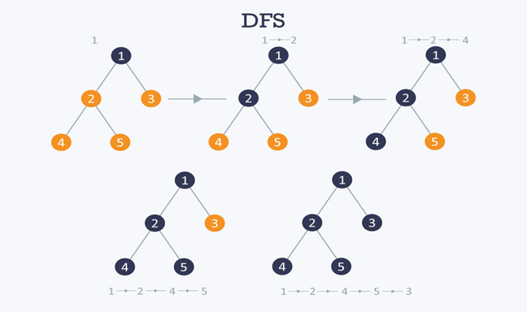

The Depth First Search(DFS) algorithm is a recursive algorithm that uses the idea of backtracking. It involves exhaustive searches of all the nodes by going ahead, if possible, else by backtracking.
Here, the word backtrack means that when you are moving forward and there are no more nodes along the current path, you move backwards on the same path to find nodes to traverse. All the nodes will be visited on the current path till all the unvisited nodes have been traversed after which the next path will be selected.
This recursive nature of DFS can be implemented using stacks. The basic idea is as follows:
Pick a starting node and push all its adjacent nodes into a stack.
Pop a node from stack to select the next node to visit and push all its adjacent nodes into a stack.
Repeat this process until the stack is empty. However, ensure that the nodes that are visited are marked. This will prevent you from visiting the same node more than once. If you do not mark the nodes that are visited and you visit the same node more than once, you may end up in an infinite loop.

Theory source : www.hackerearth.com